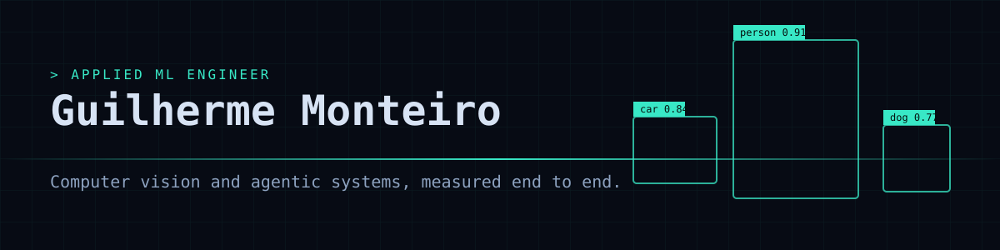

I turn client problems into measured computer-vision and agentic systems.
I am an applied ML engineer who works close to the client. At ALTAVE I was Forward Deployed Engineer for a drilling client, I manage a maritime monitoring project, and I led the architecture of a real-time GPU vision pipeline. I like to own a product end to end, from Figma and frontend to backend, AI models and hardware installation. Today I focus on agentic systems and computer vision.
Based in Santos, São Paulo, Brazil (remote). Portuguese (native), English (native or bilingual). Mechatronics Engineering, Escola Politécnica da USP.
| Project | Result | Stack |
|---|---|---|
| vision-agent-mcp | 26/36 to 28/36 on an agent evaluation after one tool-description change | MCP, Python, ONNX Runtime |
| helper-bot | AlphaZero-style KeyForge agent, 13 architecture decision records | PyTorch, ONNX, Node.js |
| agent-retrieval-service | nDCG@10 0.688 with hybrid retrieval | FastAPI, SSE, Terraform |
| lidar-camera-fusion | 0.35 m median distance error against 2.45 m for camera only | KITTI, sensor fusion |
| cv-label-audit | 89% of injected label errors found | YOLOv8, SQLite |
| cv-training-lab | 90.4% CIFAR-10 test accuracy | PyTorch, Grad-CAM |
| edge-inference-bench | 266 tok/s on GPU, 78 on CPU | C++, llama.cpp, CUDA |
| ml-feature-serving | AUC 0.72 with honest features, 0.94 when they leak | FastAPI, feature store |
Python PyTorch TensorRT DeepStream ONNX YOLOv8 OpenCV CUDA FastAPI gRPC asyncio TypeScript Figma Docker AWS MLflow